The Memorise Curation Tool is a configurable web application for curating textual archives. This guide walks through the curator workflow from first login to export, plus the administrative configuration panel. The platform supports two deployment modes. Standalone runs entirely in the browser without a backend. Platform adds a backend gateway and multi-user accounts. The two modes differ only at the authentication and persistence boundaries; the curation workflow itself is identical in both.
In standalone mode the application runs entirely in the browser and
persists workspaces in the browser's localStorage. The
login screen offers only a sign-in form, because there is no shared
backend that would distinguish accounts beyond the device.
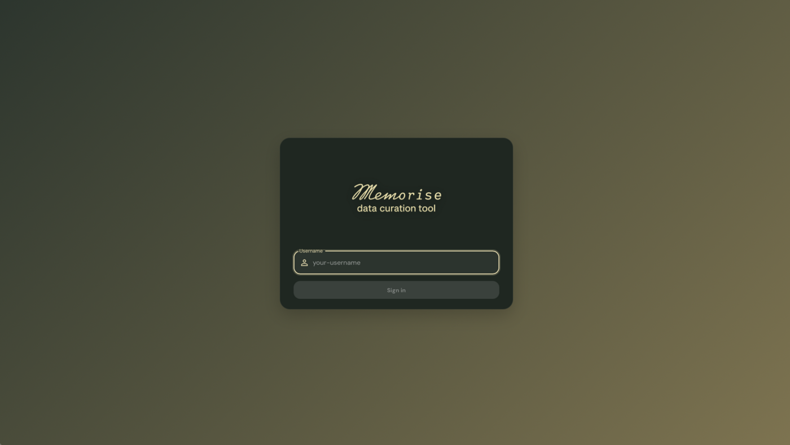
A first-time user signs in with a chosen local username; the application creates the local profile on the fly and treats subsequent logins with the same username as the same user on that device.
In platform mode the application connects to the backend gateway. The login screen exposes both a sign-in and a registration tab, and accounts are persisted server-side so the same user can log in from any machine.
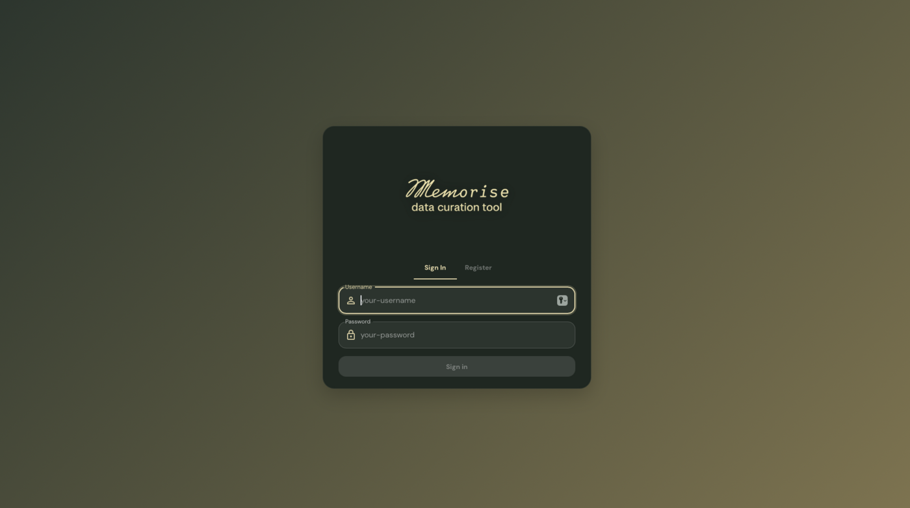
To create a new account, switch to the registration tab and supply a username, an optional email, and a password.
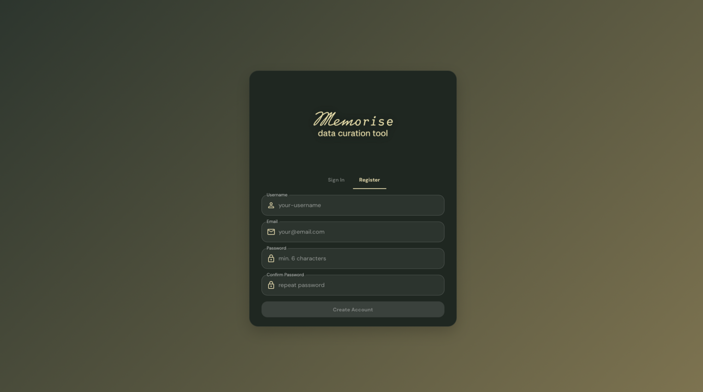
The username must be between 2 and 50 characters, the password between 4 and 128 characters, and the email, when provided, must be well-formed. The system rejects duplicate usernames with an inline message. A successful registration signs the new user in immediately.
After login the workspace list is the curator's home screen. Three example workspaces are pre-seeded on a fresh install so a new curator can explore the editor without first having to import their own text.
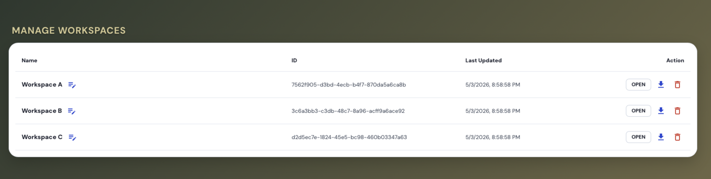
Each row exposes inline actions: a rename pencil next to the name, an Open button, an export icon, and a delete icon.
The new-workspace control opens a small dialog asking for a name and
offering an optional file-import field. The name must be non-empty after
trimming and unique among the curator's workspaces. Attaching a
.txt file (up to one megabyte) seeds the workspace's source
text directly; leaving the field empty opens the editor with an empty
placeholder into which the curator can paste text afterwards.
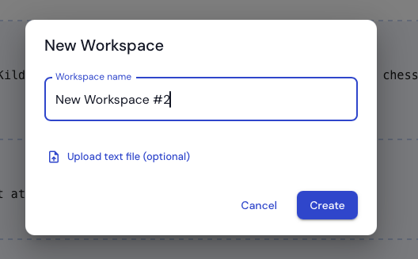
After confirmation the system creates the workspace, persists it, and opens the editor on it.
The rename pencil turns the workspace name into an inline editable field. While typing, the system checks the candidate name against the curator's other workspaces and surfaces a duplicate warning if one already uses the same name.
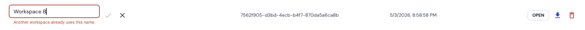
The export action opens a dialog where the curator chooses between JSON and PDF. Both formats are generated in the browser, so export remains available in standalone mode.
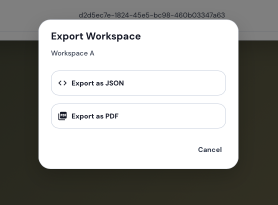
A more detailed account of what each format contains appears in Section 9.
The delete action requires confirmation, naming the workspace to prevent accidents. Deletion is permanent: in platform mode it removes the workspace from the server, and in standalone mode it removes it from the browser's storage.
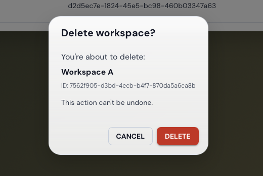
The editor view is where the curation work happens. It surfaces every concern the curator needs to operate on a single document.
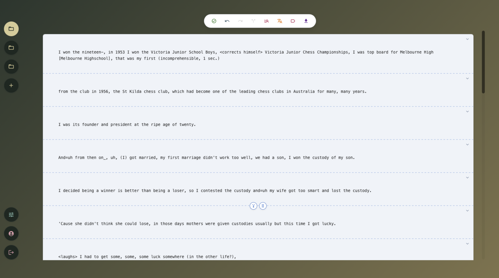
The view consists of four regions:
There is no separate import dialog inside an active workspace; source text is supplied at workspace creation. The curator may either attach a plain-text file in the new-workspace dialog (Section 2.1) or confirm the dialog without a file and paste the text into the empty editor placeholder.
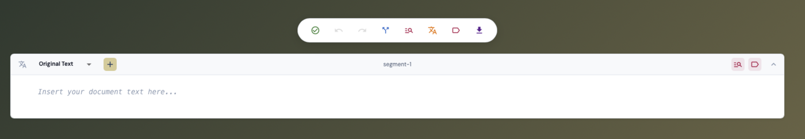
Once text is present, all subsequent NLP actions (segmentation, NER, translation, tagging) become applicable to the document.
Segmentation divides the source text into logical units. Annotations are bound to the document by character offsets rather than to individual segments, so segment boundaries can be adjusted later without invalidating named entity or translation alignment.
The Segment action on the global toolbar dispatches the source text to the configured segmentation service. The response defines the initial segment boundaries, which the editor renders as dashed markers between segments (visible in the editor overview in Section 3).
Two controls appear between adjacent segments: a merge icon on the left and a drag handle on the right.
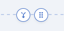
The merge icon collapses two adjacent segments into one. The drag handle, when dragged, shifts the boundary forward or backward to expand or contract the source segment relative to its neighbour.
To split a segment in two, the curator selects a delimiter character
(! ? . - , :) inside the segment's body. A small
floating menu appears next to the selection offering a Split segment
here action; confirming it splits the segment at that character
position and generates a fresh identifier for the new segment.
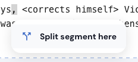
The split action is only offered while viewing the original text layer (not on a translation), so that segment-level translation entries cannot fall out of alignment with the original.
After every structural change the system recalculates the character offsets of all downstream annotations so that highlights remain aligned with the words they annotate.
When a structural edit would leave one language with translations and another without (for instance, shifting a boundary across a segment whose English translation is filled in but whose Belarusian translation is not), the action guard interrupts the operation and asks the curator how to resolve the inconsistency.
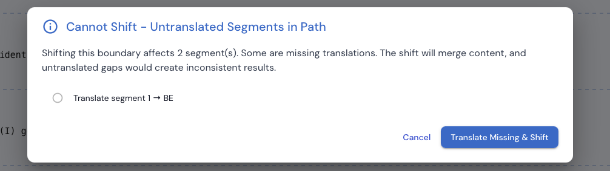
The dialog enumerates each affected segment and offers to translate the missing one in place before continuing the shift, so the curator never silently loses content.
Each segment carries a header strip that exposes the per-segment controls: the language tab on the left, and the per-segment NER and Tag buttons on the right. The same header also displays inline entity highlights inside the segment body.
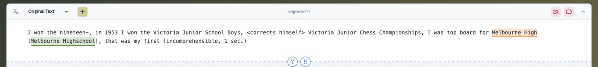
The two coloured buttons on the right are, in order, the per-segment NER trigger and the per-segment Tag trigger.
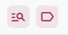
NER analysis can be requested per segment from the buttons above, or globally from the document-level toolbar. The system dispatches the relevant text to the configured NER service, and renders returned spans as inline highlights, color-coded by entity type. For global NER the system iterates over every segment and presents a partial-success notice if some segments succeeded and others failed.
Selecting a range of text in the editor reveals a floating entity-type picker. The picker lists the entity categories supported by the active layer, each marked with the bullet colour used for inline highlights. Choosing a category creates a user-curated annotation at the selected coordinates, distinct from API-generated annotations.
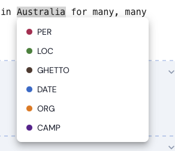
Clicking an existing highlight opens the same floating menu in edit mode. The top of the menu exposes a text field that lets the curator correct the span's surface form (for instance, extending Auschwitz to Auschwitz-Birkenau); the category list lets the curator change the entity type; and a Delete action at the bottom of the menu removes the span entirely.
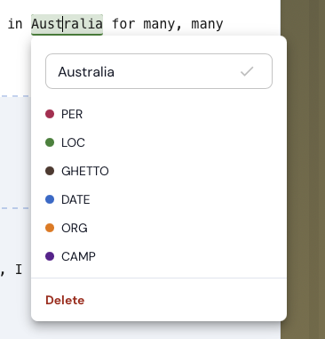
Deleting a span records its start:end:entity triple in a
deleted-set, so re-running NER will not resurrect the same span at the
same position and entity type.
When re-running NER produces a span that overlaps an existing user-curated annotation, or an existing API annotation with a different entity type, the system pauses the operation and asks the curator which version to keep.
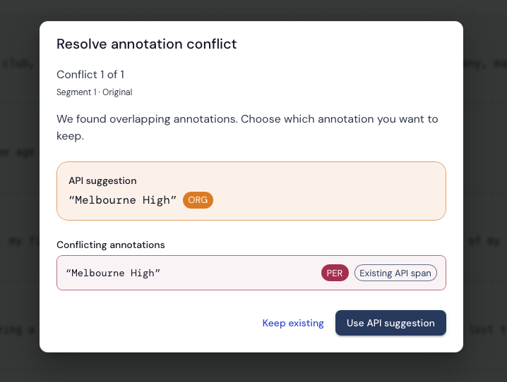
API-vs-API overlaps where both annotations agree on the entity type are resolved silently in favour of the newer span. All other overlaps require an explicit decision.
The language tab on the left of the segment header exposes the active layer (initially Original Text). The plus button beside it opens a language picker for adding a new target language.
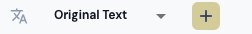
The picker is a searchable list of supported target languages, populated from the configured translate service.
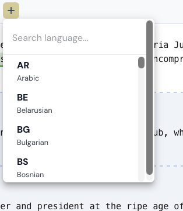
Once a translation exists, the language tab becomes a dropdown that switches the segment view between the original text and any of its translations.
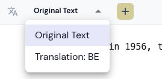
The translated text region is editable. Saving an edit marks the segment translation as user-edited; the indicator next to the segment header shows that the curator's prose, not the API response, is currently in effect.
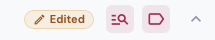
The per-segment re-translate action overwrites the existing segment translation with a fresh API response. If the segment carries the Edited badge, the system first presents a confirmation dialog naming the language and warning that the manual edit will be overwritten. Cancelling the dialog leaves the existing translation untouched; confirming runs the API call, replaces the segment translation, and clears the edit flag.
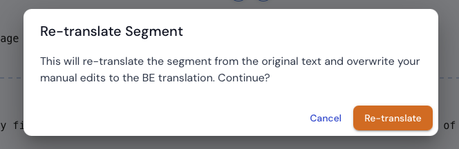
The document-level Translate action on the global toolbar behaves differently. It only fills in segments that do not yet carry a translation in the target language, leaving any existing translation, including edited ones, untouched. The warning dialog therefore does not apply to that action.
To remove a translation entry for a single segment without affecting other languages, the curator opens the segment header, switches to the target language, and confirms the clear action. The system asks for confirmation before discarding the per-segment entry.
The Tag button opens the tag panel. Its scope tracks the editor
selection: with a segment active it shows Segment Tags
for that segment; with no segment active it shows Document
Tags for the workspace. The search field at the top of the
panel queries the historical thesaurus; matched entries appear in a
dropdown with their hierarchical path, and alias markers
indicate alternative names that resolve to the same canonical entry.
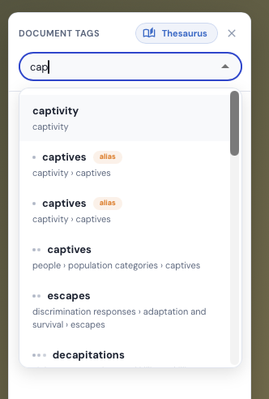
The thesaurus search runs in a Web Worker, so the editor remains responsive even on a large thesaurus.
Selected tags are grouped by their parent category in the panel, with a count next to each group. Custom (free-text) tags are visually distinct from thesaurus entries.
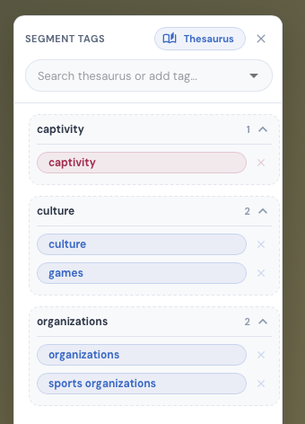
Toggling the Free Text switch at the top of the panel changes the input from thesaurus search to a literal-tag input, so the curator can attach an ad-hoc label that is not present in the thesaurus.
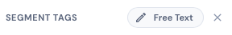
Hovering over a tag chip in the panel reveals a small × button on its right edge. Clicking it removes the tag from the active scope (segment or document) without affecting other segments or other tags. There is no confirmation dialog; the action is reversible through the global undo control (Section 11).
The semantic tagging action (labelled SEM-TAG in the global toolbar) requests a topical classification of a segment or the entire workspace against the configured thesaurus. Suggested tags are added to the tag panel automatically, scoped either to the relevant segment or to the workspace.
The export action is available both from the workspace list (Section 2.3) and from the global toolbar inside the editor. The toolbar exposes the export controls as a small icon group next to the save action.
The format chooser (Section 2.3) offers JSON and PDF. The JSON format mirrors the internal workspace structure, including the deleted-API-key set and the per-segment edit flags, so that the document can be re-imported into another instance without losing state. The PDF format renders the curated content as a human-readable document for archival and sharing. Both formats also contain the per-session curator action counts collected during curation.
Users with the administrator role have access to a Services panel from the sidebar. The panel lists every NLP service type with its current endpoint URL, the selected adapter, the latest health-probe result, and the round-trip latency of the last probe.
The Refresh control above the table re-runs every health probe without modifying any configuration, which is useful when investigating intermittent upstream failures.
To change a URL or to switch the adapter for a given service, the administrator clicks Edit. The URL becomes editable and the adapter cell becomes a dropdown of adapters registered for that service type. The dropdown lists, for example, the SDU service and the Mock Medical (Comprehend-style) adapter used for the medical-domain reproduction described in the thesis.
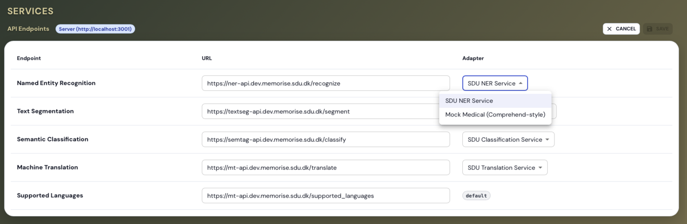
Saving a change writes the updated configuration through the configuration service. The administrator then triggers the Refresh control to re-probe the affected endpoint and verify reachability; the table updates with the new status.
The auto-save mechanism persists every change without explicit user action. Typing bursts are debounced with a three-second idle window; discrete actions such as confirming a tag or accepting a span use a one-second window; and a thirty-second hard cap guarantees that no session ever drifts further than half a minute from the persisted state. Navigation, logout, and workspace switching trigger an immediate forced save before leaving the page.
The global toolbar additionally exposes Undo and Redo controls. They roll back individual mutations recorded by the session store, such as span creation, tag attachment, segment merge, or translation edit, and replay them on demand.
If the curator attempts to navigate away or close a workspace with unsaved changes still in flight, the application interposes an unsaved-changes dialog with Save, Discard, and Cancel options, so that no work is lost to an accidental click.
When an external NLP service is unreachable the corresponding action surfaces an error notice rather than failing silently. The curator's existing data is never modified by a failed request, so retrying once the service is back is always safe.